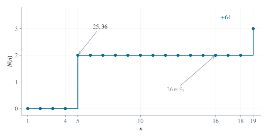

2.1 把集合并改写成两个集合
当下标从 0 变化到 n 时，第一种元素逐次增加 1，第二种元素逐次增加 2。因此：
Sn={20,21,…,20+n}∪{26,28,…,26+2n}. （1）第一集合中的数 m 可以写成 m=20+j，其中整数 0≤j≤n；因此它恰好包含 20 到 20+n 的所有整数。第二集合中的数写成 m=26+2j，所以必须为不小于 26 的偶数，且首次进入时下标为 j=(m−26)/2。集合并按数值计数，同一个数由两种表达式产生时仍是一个元素。
对平方数 m≥20，第一种进入时刻为 m−20。如果 m 还为偶数且 m≥26，第二种进入时刻为 (m−26)/2，取两者中的较小值；如果 m 为奇数，则只有第一种时刻。这样可以先计算各平方数何时进入，再判断数量的奇偶。
2.2 确定最早出现的平方数
小于 20 的平方数永不出现。平方数 25 在第一集合中首次出现于 20+n=25，即 n=5。平方数 36 在第二集合中首次出现于 26+2n=36，也为 n=5。
在 25,36 之后，按大小排列的两个平方数是 49=72 和 64=82。49 为奇数，其进入时刻只能是 49−20=29。64 有两种进入时刻：第一集合给出 64−20=44，第二集合给出 (64−26)/2=19，所以首次进入时刻是 19。虽然 64>49，它反而先进入这个并集。
这些时刻之外还要排除更大的平方数。对所有 n≤19，第一集合的最大值至多为 39，第二集合的最大值至多为 64。因此 81,100,121,… 都尚未出现，只需核对下面四个候选：
平方数首次出现的 n25536549296419 （2）2.3 排除所有更小的正整数
记 Sn 中完全平方数的个数为 N(n)。当 1≤n≤4 时，第一集合最大值不超过 24，第二集合最大值不超过 34，且第二集合不含奇数 25，故无平方数。当 5≤n≤18 时，第一集合最大值不超过 38，第二集合最大值不超过 62；其间只有 25,36，不含奇数 49，也尚未达到 64。
特别地，n=16 时第一集合也出现 36，但 36 早已在并集中，不会新增一个元素。

图 1. 平方数个数的变化。n=16 时再次生成 36，不改变集合中的元素个数。
2.4 达到第一个奇数计数
当 n=19 时，第一集合包含 25,36，第二集合包含 36,64。它们的交集在平方数中只有 36，所以并集中平方数个数为 2+2−1=3。在 n=1,2,3,4 时个数是 0，在 5≤n≤18 时个数是 2，这些都是偶数；在 n=19 时第一次变成奇数。因此：
nmin=19. （3）